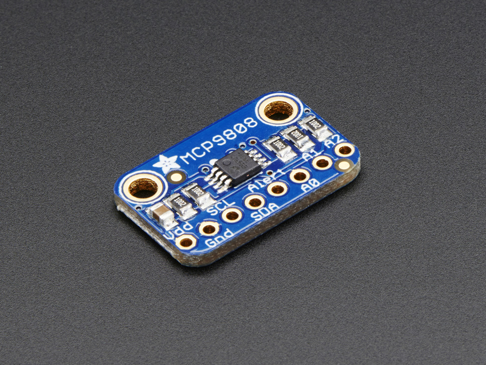
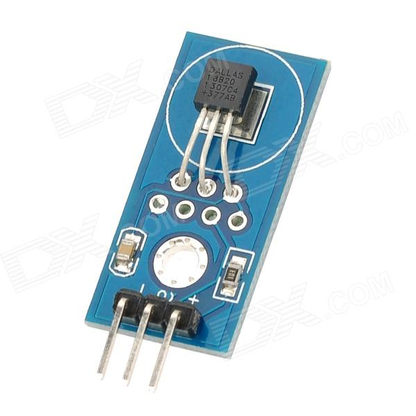

A temperature is a comparative objective measure of hot and cold. It is measured, typically by a thermometer, through the bulk behavior of a thermometric material, detection of heat radiation, or by particle velocity or kinetic energy. It may be calibrated in any of various temperature scales, Celsius, Fahrenheit, Kelvin, etc.
This I2C digital temperature sensor is one of the more accurate/precise we’ve ever seen, with a typical accuracy of ±0.25°C over the sensor’s -40°C to +125°C range and precision of +0.0625°C. They work great with any microcontroller using standard i2c. There are 3 address pins so you can connect up to 8 to a single I2C bus without address collisions. Best of all, a wide voltage range makes is usable with 2.7V to 5.5V logic.
The DS18B20 is a rather useful sensor because you can read more than one of them using the same GPIO pin. Device is able to recognise the input from each separate sensor.
